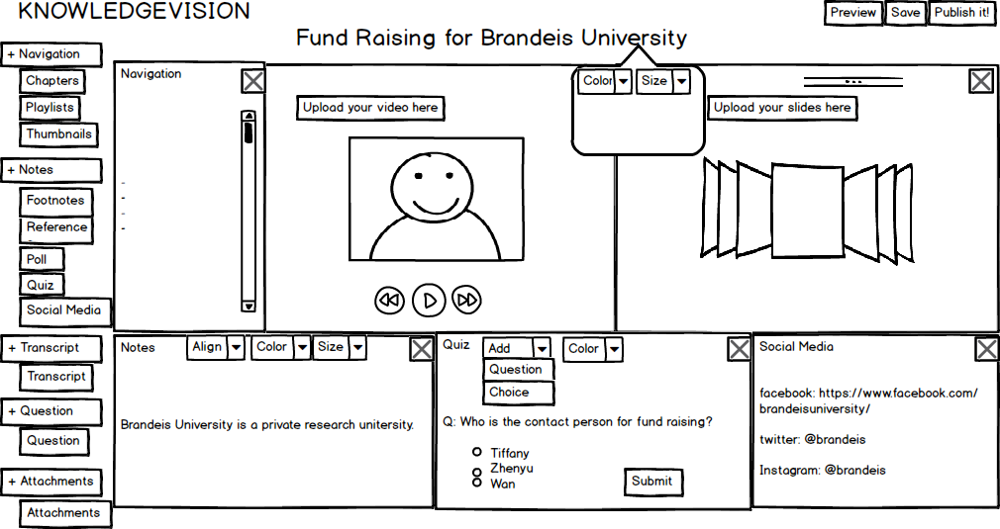
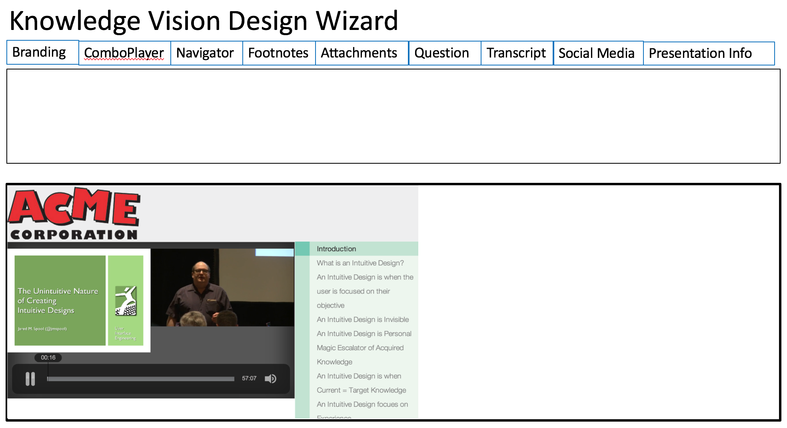
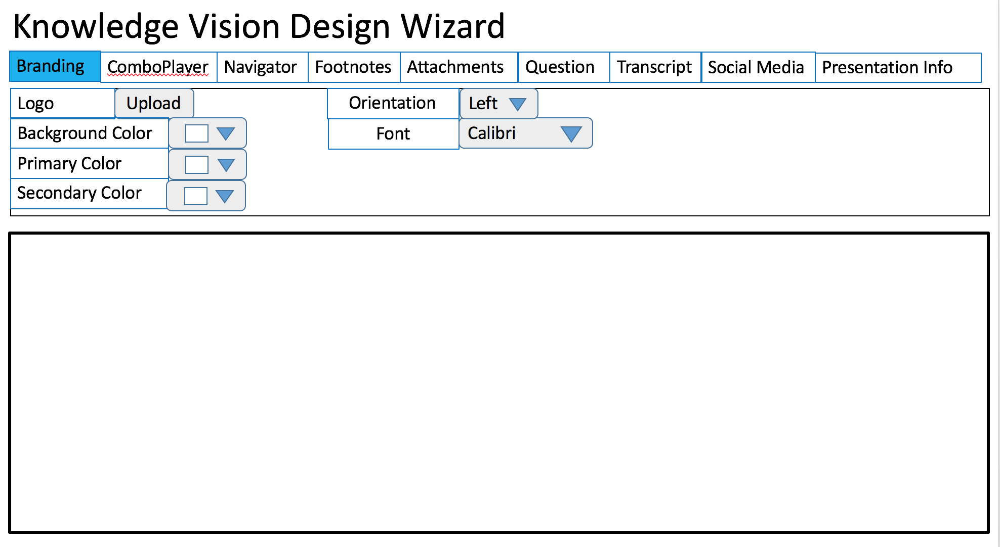
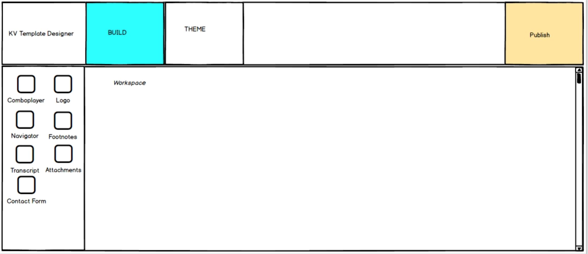
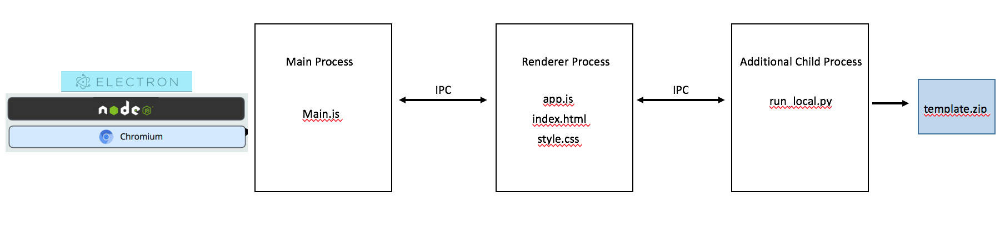

Senior Field Project Page: Knowledge Vision Team
Project maintained by SeniorFieldProjectKVTeam Hosted on GitHub Pages — Theme by mattgraham
Brandeis Spring 2016 Senior Field Project: KnowledgeVision Team
KnowledgeVision Template Designer
Create custom KnowledgeVision templates without needing to know front-end development!
Objectives
Our main objective for the Spring 2016 Senior Field Project was to create a tool for KnowledgeVision that allows their customers and non-technical staff to create customized templates without the necessity of front-end development skills. It would have the additional benefit of decreasing the work the engineers on the team need to do for creating customized templates for the customers, because it generates HTML and CSS files to work from so they don't have to start from scratch when creating a custom template. This gives the ability to customize templates to customers who want more control over the design of their presentation layout, but who might not have the means to pay for a custom template to be made, allowing KnowledgeVision to reach a broader market.
Index
- General Overview of the Application
- Installation Instructions
- Project Development Details
- Technologies We Used
- Architecture of Application
- Resources We Used
- Suggestions For Future Work
- Contributors
- Support or Contact
- Acknowledgements
General Overview of the Application
The KnowledgeVision Template Designer is an Electron application featuring a drag and drop user interface. Customization of fonts, font size, and font color is possible as well as background color choice. Customization can be on a component basis or be applied to the whole template. Pre-made themes, which are just design parameters applied to the whole template, can be uploaded and saved. Templates are saved as zip files ready to be uploaded to the KnowledgeVision website.
The components are grouped into main and bottom components -- as a suggestion to the user for where those components can be dragged (though there are some exceptions including the logo)
1. The comboplayer component is always present, as per the suggestion of the partners.
Installation Instructions
Project Development Details
Initial Designs
First, we explored two alternative design options for the project:
Version 1.a: Drag and Drop
The drag and drop version of the user interface would have allowed user to design their custom templates by dragging available components into the workspace, where the options for customizing the components are available to users when the components are selected.
Version 1.b: Design Wizard-esque
The design wizard-esque version of the user interface would have guided users through the process of creating the custom template from start to finish.
As the user navigated between the tabs at the top of the interface for the different components of the presentation, choosing to include the component or not, the component would appear in the workspace and the user would have the option to set options for the component such as: background color, primary/secondary color, orientation of the component, font, etc.
Final Design:
For the final design of the UI of our application, we decided to use a drag-and-drop interface for the Template Designer. There are some differences between the initial version of the drag-and-drop interface and the final one. This design was heavily inspired by the design of the user interface of the Weebly website designer tool.
- 1. The draggable elements are tiles.
- 2. Theme, is placed its own separate tab.
- 3. When a component is clicked, a new window with the options for customizing the component is revealed.
As can be seen above, there was some major deviations from the final design in the final product, based on the feasbility of implementation based on the time available to us during the semester.
Technologies We Used
Electron - a new way of creating cross-platform applications using web technologies. Uses HTML, CSS, Javascript with Chromium and Node.js to build application. Formerly known as Atom Shell and made by Github. As a very new, popular, and currently developing open source technology, the only drawback is that things can get broken or are not well documented, though the latter is improving every day and there is a very active community through the Slack channel.
Front-end:
- Javascript (Node, JQuery, Ajax)
- HTML
- CSS
Architecture of Application
The basic architecture of the KnowledgeVision Template Designer is:
The Electron framework runs on Node.js and Chromium. Through the main.js file is where the main process that creates the main window of the application and determines actions to take in situations such as when the main window is closed. Through the IPC (InterProcess Communication) module, the main process is able to send and receive messages from the renderer process. The renderer process passes messages from the app.js file. In our application, the we create an additional child process in order to run our python script that generates the final template zipfile.
Resources We Utilized
Books:
- The Lean StartUp by Eric Ries
- Don't Make Me Think by Steve Krug
- Designing With the Mind in Mind by Jeff Johnson
Documents:
- KnowledgeVision Enhanced Templates Guide v.1.3
- Template Design CheckList - available on the KnowledgeVision Website
Websites:
Usage of this APP
After download/clone from the github repo, cd to the master directory and run "npm start", then you can drag and drop to make your preference. Theme button is used to store the theme params into json file and load to reuse it. Pulish button is used to store all the changes you have made and generate a zip file which you can upload to KnowledgeVision system. You definitely can reload the json file call kv.json under the master directory to apply things you made again!
Suggestions for Future Work
For continuing the project, we suggest the following added features and changes to the KnowledgeVision Template Designer:
- 1. Resize bug - when the bottom items are added with a very large font size, the bottom box works perfect with the scroll bar, but it fails if you add a component to the top, it will resize the bottom, therefore the height of the bottom-three components will change, but the height of the sample won't change, which causes the sample to go past the boundaries of the box. The solution we have is to simply resize the height of sample when hover, which is not efficient.
- 2. Scroll bar - sometimes a scroll bar will appear and decrease the consistency of the whole page. We have not been able to diagnose exactly the conditions where this will appear or disappear.
- 3. Sample pictures - some more sample pictures should be used to make the template design process more real, especially the navigation subtitles after clicking on the switchable option button.
- 4. Subtitle modification - the subtitles should be changeable separately from the sample body.
- 5. Optimize compression of application to decrease application size as much as possible.
- 6. Improve the UI design so it looks more professional.
Contributors
Tiffany Chen (@tiffwchen) is a graduating Master's student at Brandeis University and holds a B.A. in Biological Sciences from Wellesley College. You can check out her personal website.
Zhenyu "Jason" Han (@jaosn) is a graduating Master's student at Brandeis University and holds a B.S. in Computer Science from University of North Carolina at Pembroke.
Wan Zhou (@wan-zhou) is a graduating Master's student at Brandeis University.
Support or Contact
Feel free to make a pull request!
Acknowledgements
The Brandeis Spring 2016 Senior Field Project KnowledgeVision team would like to extend a big "Thank you!" to Michael Kolowich and Alex Kieft for taking the time to participate in the program and mentor us.
We also thank Pito Salas for his guidance and patience throughout the semester.